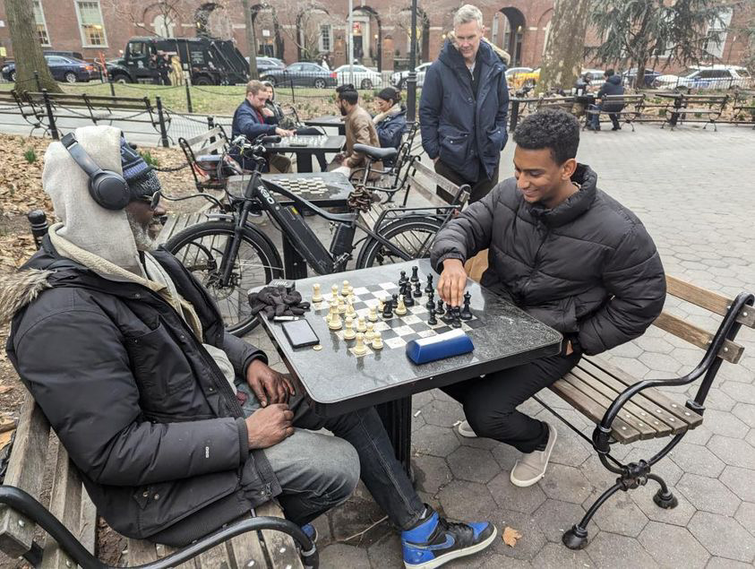
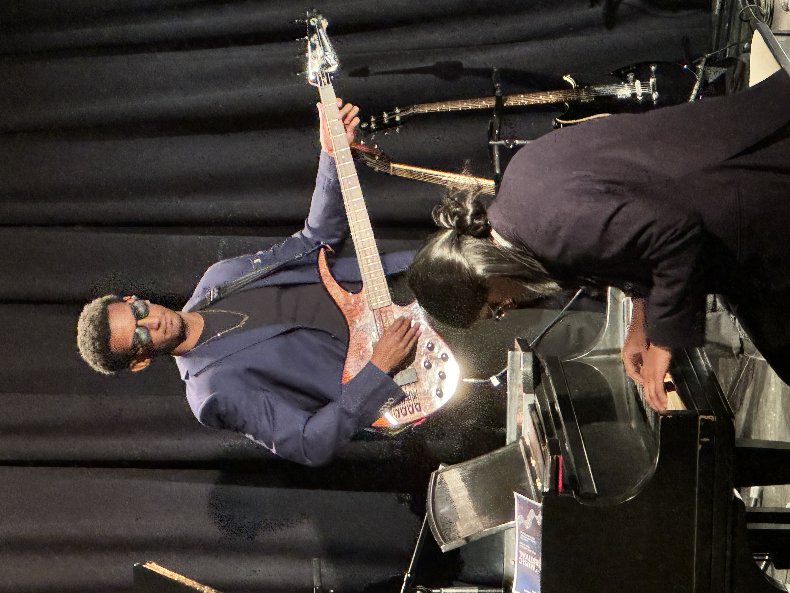

I got into specialty coffee 5 years ago. Originally, I just wanted better morning coffee and the most effective and easiest way to improve your coffee is to grind your own beans. So I got a grinder and started making pour overs. I did not think that 5 years later I would be preparing specialty water, choosing different grinder geometries based on the coffee, notating every brew in detail, and competing against actual specialty baristas. It has been a minor obsession and a lot of fun! Check out my Substack for coffee shop reviews and my Instagram for new coffee reciepies.

I was twenty when I started playing chess. I got hooked quickly and spent a lot of time online, learning just enough to stop losing every game right away. I still play, I am still not very good at it, and I still enjoy it.

I listen to a lot of jazz and play piano when I get the chance. At the physics music festival my roommates and I played “Take Five,” and since I got the short stick I had to play bass, but it I've learned to like bass.
Graphic design and spray paint have been in the background for me since high school, two outlets I still enjoy when life leaves room. I wish I did them more often than I actually do.